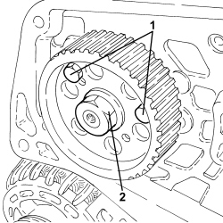
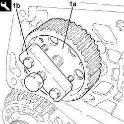
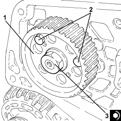

1060E30 PRESSURE PUMP DRIVE PULLEY - R.R.
- Path
- Procedures > 10 ENGINE > 1060 DIESEL INJECTION SYSTEM > 1060E DIESEL PRESSURE PUMP AND CONTROL > 1060E30 PRESSURE PUMP DRIVE PULLEY - R.R.
- Kind
- repair procedure (removal / refitting; the operation number is the code)
- Applies to
- engines: 1.9 JTD 8V, 1.9 JTD 16V, 2.4 JTD 20V; all production periods
- Interactive page
- https://sloeber94.github.io/elrnDB/#/939010550
Applies to: engines: 1.9 JTD 8V, 1.9 JTD 16V; all production periods
 Removing
Removing
 Refitting
RefittingOp. 1016A10 SOUND-PROOFING COVER - R.R
Op. 1048A50 TURBOCHARGER AIR INTAKE PIPE - R.R.
Op. 1084A16 OIL DIPSTICK PIPE - R.R
Op. 1048A28 VACUUM AIR CIRCUIT RESONATOR PIPE - R+R
Op. 4450B04 RIGHT FRONT WHEEL - R.R
Op. 7055B66 ENGINE COMPARTMENT DUST COVER IN RIGHT FRONT WHEEL ARCH - R.R.
Op. 7055B91 RIGHT FRONT WHEEL ARCH LINER - R.R.
Op. 4410D16 BRACKET (ONE) RETAINING CHASSIS TO BODY - R R
Op. 1092G10 SINGLE ENGINE BELT - R.R
Op. 1092A10 CRANKSHAFT PULLEY - R + R
Op. 1032B10 TOOTHED TIMING BELT - R + R FOR TIMING ADJUSTMENT OR REPLACEMENT
1. Lock the rotation of the pressure pump drive pulley using two bolts.
2. Undo the pressure pump drive pulley nut.
- Undo the two bolts for locking the rotation of the pressure pump drive pulley fitted previously.

Applies to: engines: 1.9 JTD 8V, 1.9 JTD 16V; all production periods
1. Remove the pressure pump drive pulley (1a) using the tool (1b).
Tool | Description | Function | Validity |
|---|---|---|---|
1860854001 | Extractor | Pressure pump control pulley removal | 1.9 JTD 8V 1.9 JTD 16V 2.4 JTD 20V |
- Remove the key.

Applies to: engines: 1.9 JTD 8V, 1.9 JTD 16V; all production periods
Refitting
Removing- Place the key back in its housing.
1. Place the pressure pump drive pulley back in its housing.
2. Lock the rotation of the pressure pump drive pulley using two bolts.
3. Tighten the nut fixing the pressure pump drive pulley to the recommended torque.
Component | Fastening | dia | Value (daNm) | Validity |
|---|---|---|---|---|
Pressure pump drive pulley | Nut | M14 | (pressure pump side) 4.5 - 5.5 | 1.9 JTD 8V 1.9 JTD 16V |
- Undo the two bolts for locking the rotation of the pressure pump drive pulley fitted previously.

Applies to: engines: 1.9 JTD 8V, 1.9 JTD 16V; all production periods
Op. 1032B10 TOOTHED TIMING BELT - R + R FOR TIMING ADJUSTMENT OR REPLACEMENT
Op. 1092A10 CRANKSHAFT PULLEY - R + R
Op. 1092G10 SINGLE ENGINE BELT - R.R
Op. 4410D16 BRACKET (ONE) RETAINING CHASSIS TO BODY - R R
Op. 7055B91 RIGHT FRONT WHEEL ARCH LINER - R.R.
Op. 7055B66 ENGINE COMPARTMENT DUST COVER IN RIGHT FRONT WHEEL ARCH - R.R.
Op. 4450B04 RIGHT FRONT WHEEL - R.R
Op. 1048A28 VACUUM AIR CIRCUIT RESONATOR PIPE - R+R
Op. 1084A16 OIL DIPSTICK PIPE - R.R
Applies to: engines: 2.4 JTD 20V; all production periods
- On this car, it is not possible to remove/refit the pressure pump drive pulley on the car.
To perform this operation, remove/refit the power unit
Op. 1004B10 POWER UNIT WITH MANUAL GEARBOX - R.R
and then work at the bench, customising the engine service procedures for this operation.
Topics linked from this page (12)
- 1004B10 POWER UNIT WITH MANUAL GEARBOX - R.R
- 1016A10 SOUND-PROOFING COVER - R.R
- 1032B10 TOOTHED TIMING BELT - R + R FOR TIMING ADJUSTMENT OR REPLACEMENT
- 1048A28 VACUUM AIR CIRCUIT RESONATOR PIPE - R+R
- 1048A50 TURBOCHARGER AIR INTAKE PIPE - R.R.
- 1084A16 OIL DIPSTICK PIPE - R.R
- 1092A10 CRANKSHAFT PULLEY - R + R
- 1092G10 SINGLE ENGINE BELT - R.R
- 4410D16 BRACKET (ONE) RETAINING CHASSIS TO BODY - R R
- 4450B04 RIGHT FRONT WHEEL - R.R
- 7055B66 ENGINE COMPARTMENT DUST COVER IN RIGHT FRONT WHEEL ARCH - R.R.
- 7055B91 RIGHT FRONT WHEEL ARCH LINER - R.R.